Brand-run points contests. Shoppers earn points by playing an AI-written brand quiz and by reviewing, rating, recommending and buying the brand's products, climb each contest's leaderboard, and win coins to spend on that brand's products.
PRD v2Local app + AI quizUpdated Nov 15, 2026Build 2 turns the click-through prototype into a working local app with a real AI call: an AI-written brand quiz inside each contest. It also separates points (per contest, for the leaderboard) from coins (the wallet currency, paid as prizes).
| Area | PRD v1 (Build 1) | PRD v2 (Build 2) |
|---|---|---|
| Currency | One coin balance; coins earned counted on every leaderboard | Points belong to one contest and drive its leaderboard. Coins are the wallet: a 500-coin welcome bonus plus contest prizes, spent in the Rewards Shop. |
| Joining contests | No limit | Up to 5 live contests at once |
| Point rules | Same values everywhere | Each contest picks which actions score and how much (a quiz-only contest ignores reviews) |
| Earning | Dropdown on the Products page | Rewards Shop → Earn tab: review, photo, rating, referral, purchase. One action credits every joined contest that scores it. |
| Games | None | AI quiz: 5 questions per play written by Claude, up to 5 plays per contest, no repeated questions. Default is a good mix: 3 brand questions (story, founders, best-sellers, products, upcoming collections, offers) + 1 industry + 1 general-knowledge; the brand can also choose brand-only, industry-only or general-only per contest. |
| Contest page | Prizes and standings | Tabs: Prizes, Leaderboard, Scoring, How to Play, plus the quiz card |
| Leaderboards | Per contest | Per contest, plus general leaderboards: most points, quiz plays and coins won; most-reviewed and top-rated products |
| Brand side | Non-goal | Admin panel sketch: analytics, launch/edit contests, quiz topic and difficulty, plays allowed, prizes, Rewards Shop items, AI cost (full version in Build 3) |
| Tech | One static HTML file, fake data | Local Node server, JSON data store, Claude API (Haiku 5.5), PostHog analytics |
Shoppers won't spend time with a brand between purchases, and a prize leaderboard only works if every question is accurate and fair.
Brands pay for engagement with their products, not just for sales. If shoppers don't replay the brand quiz, the contest is just a coupon. If AI questions are wrong, repeated or too easy, rankings feel rigged and brands won't trust them with prizes. Cost matters too: a question generator that costs more per player than the prize budget can't scale.
| Question | Signal (PostHog / app log) | Target in pod testing |
|---|---|---|
| Do joiners play the quiz? | contest_joined → quiz_started | 70%+ of joiners start a quiz |
| Do they finish and replay? | quiz_completed; plays per player | 80%+ completion; average 2+ of 5 plays |
| Is it the right difficulty? | Average score in admin "Avg quiz score" | 50–85% (not trivial, not impossible) |
| Are the questions accurate and new? | Testers flag wrong or repeated questions | 0 wrong answers and 0 repeats across 25 questions per player |
| Does the leaderboard move? | Rank change after a quiz (two players, Switch player) | Each play visibly changes rank |
| Is it cheap and fast enough? | Cost and time per AI call (npm run usage) | Under $0.01 per quiz; under 10 s to generate |
Join a contest → play the AI quiz → watch your rank move.
Done means: a new player joins, plays the quiz 2+ times, sees no repeated or wrong questions, and can say their rank and what they'd win.
app/index.html) and brand admin (app/admin.html) run in the browser and talk to one local server, server.js.claude-haiku-5-5, set in .env) with structured outputs, so the reply is always valid JSON: question, 4 options, correct answer and explanation.
data/db.json. Every AI call is logged with tokens, cost and time; the admin page and npm run usage report them.contest_joined, quiz_started, quiz_answered, quiz_completed, earn_action and reward_redeemed..env on my laptop (git-ignored); the PostHog token in the pages is the public one.| Claude Haiku 5.5 (current) | Claude Opus 5.5 (option) | |
|---|---|---|
| Price per million tokens (in / out) | $0.10 / $0.50 | $4 / $20 |
| One mixed quiz (5 questions; measured ~2,400 tokens in incl. the brand brief, ~3,050 out incl. reasoning) | $0.0018 (measured) | ≈ $0.07 (estimated) |
| One player, 5 plays in a contest | ≈ $0.009 | ≈ $0.35 |
| 1,000 players × 5 plays | ≈ $9 | ≈ $350 |
Measured in Build 2 testing (Nov 15): the mixed quiz on Claude Haiku 5.5 averaged $0.0018 per quiz and 13.4 s to generate. One player's 5 plays gave 25 questions: 15 brand, 5 industry, 5 general (exactly 3/1/1 every play), 0 repeats, and every answer I checked was correct. That misses my 10-second target, so Build 3 will pre-generate question pools. All AI testing this week (about 20 quizzes across three quiz versions) cost about $0.03. 0 failed calls. Hosting is $0 (GitHub Pages; the app runs locally) and PostHog is on the free tier. Haiku keeps the AI cost far below the coin prize budget; Build 4 will compare Haiku and Opus on question accuracy before deciding whether Opus is worth ~40× the cost.
Pending work for later builds is tracked in BACKLOG.md.
The working app runs on my laptop for pod testing. The public Build 1 prototype stays online as a static demo.
git clone https://github.com/building-with-ai-f26/yg1821-gamifiedecomm.git cd yg1821-gamifiedecomm && npm install cp .env.example .env # add ANTHROPIC_API_KEY npm start # player app: localhost:3000 · brand admin: localhost:3000/admin
npm start (first time: npm install, and put your ANTHROPIC_API_KEY in .env).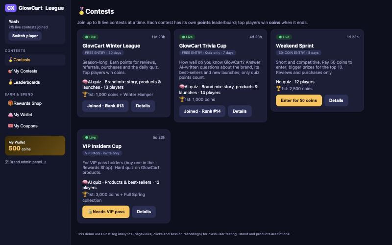
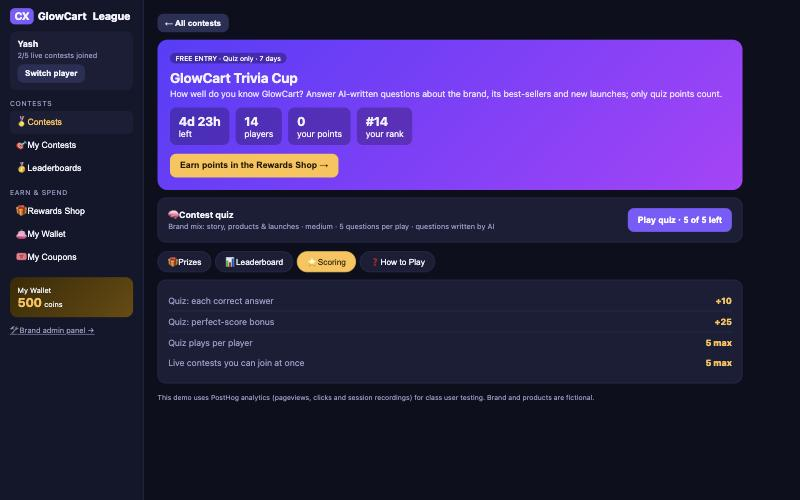
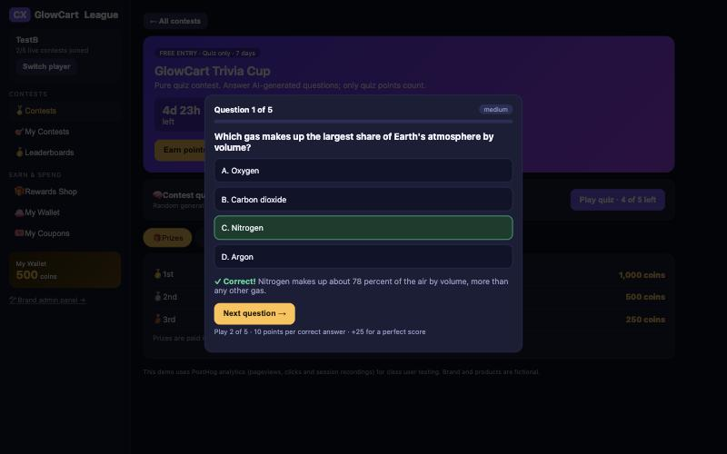
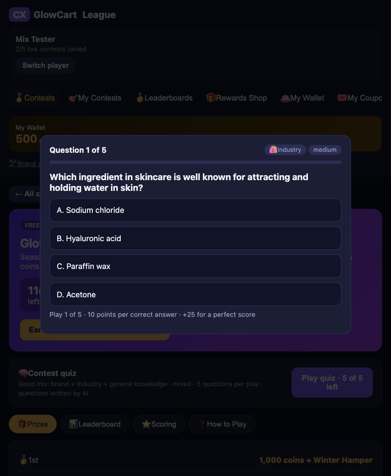
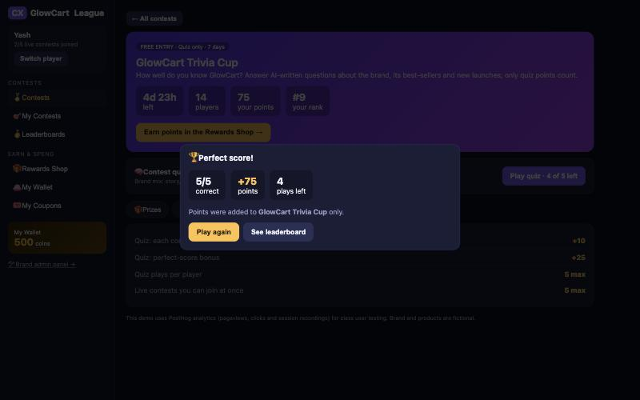
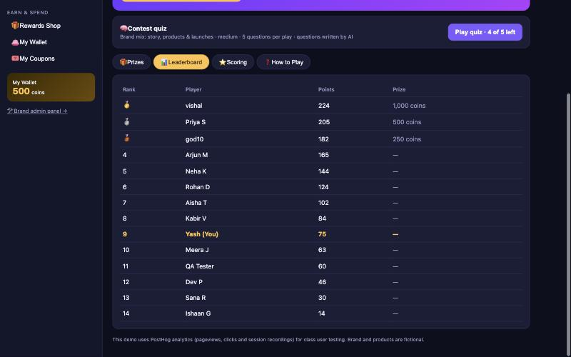
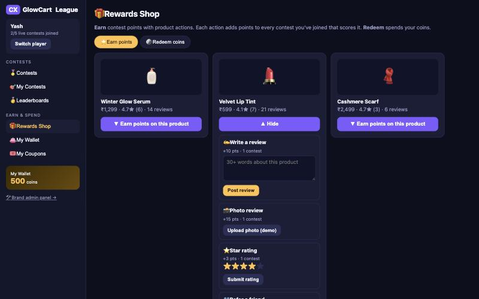
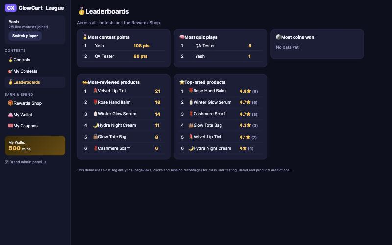
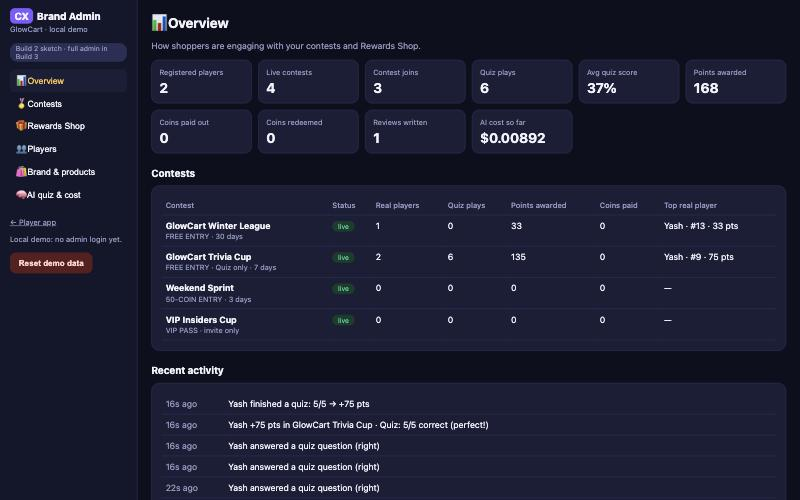
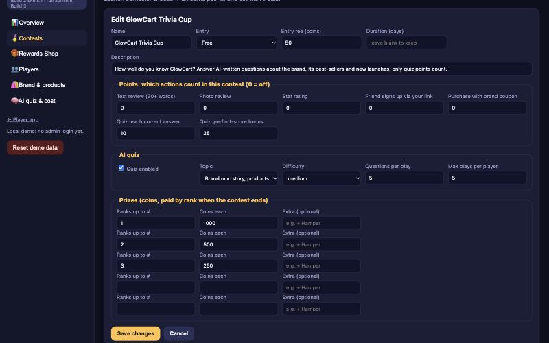
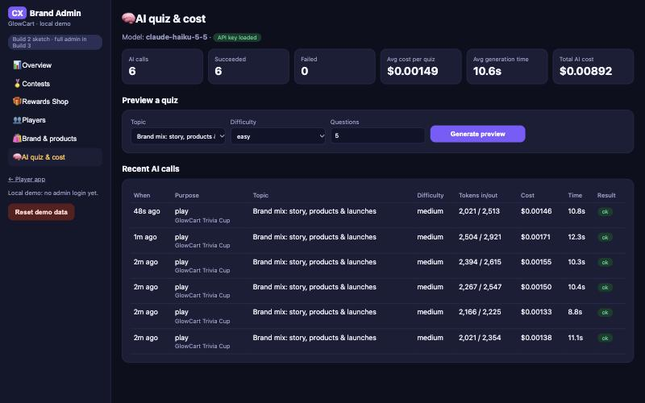
Small D2C brands pay for every first order through ads, then struggle to get the second order, reviews and referrals. Their loyalty points are a number in an account page that customers forget. Customers have no reason to come back between purchases and no visible reward for recommending products they already like.
Primary user — the repeat shopper. An 18–35-year-old customer of a small D2C beauty or fashion brand in India who has bought at least once and shops on mobile. I can reach these shoppers through Credexon's pilot brands, which reuse the free-pilot-for-feedback approach that won Credexon's B2B clients, and through the audience from Credexon's earlier fantasy app (~45k registered users). For weekly testing in this course, classmates play shoppers on the prototype.
Who pays — the brand marketer. They set coin values and prizes and fund rewards from their own products. They are not the user for Build 1. The brand admin is a non-goal below.
Join a contest → act on a product → see your rank move.
Done means: a first-time shopper completes steps 1–4 unaided in under 2 minutes and can say what they'd win right now.
Watch rewarded ads (+5–10, max 5/day), daily login streak, wallet with coin history, brand reward shop (Coupons, Products, Experiences, Passes) issuing CRX- coupon codes, and a scoring-system page. Coin values match the Credexon 2.0 engine defaults.
| Signal | Target | PostHog event (Build 2) |
|---|---|---|
| Visitors who join a contest | 25%+ | contest_joined |
| Joiners who complete a product action | 60%+ | product_action {type} |
| Referral links sent per shopper | 0.5+ | referral_link_copied |
| Shoppers who open My Contests again on another day | 30%+ | my_contests_viewed |
That a leaderboard motivates shoppers who are ranked far from a prize. The "coins to next tier" line and the short coin-entry sprint test this. If day-7 return is low for mid-ranked shoppers, the next lever is weekly mini-leagues.
A single HTML file that runs locally in any browser with fake data and no backend. It's built to test the flow, not the architecture.
Open the prototype →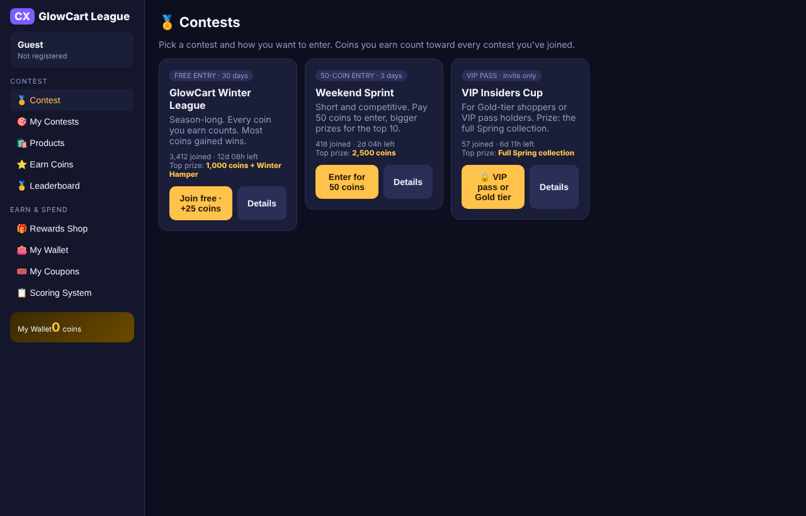
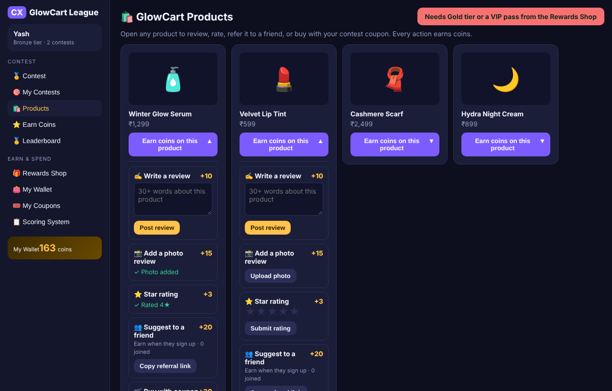
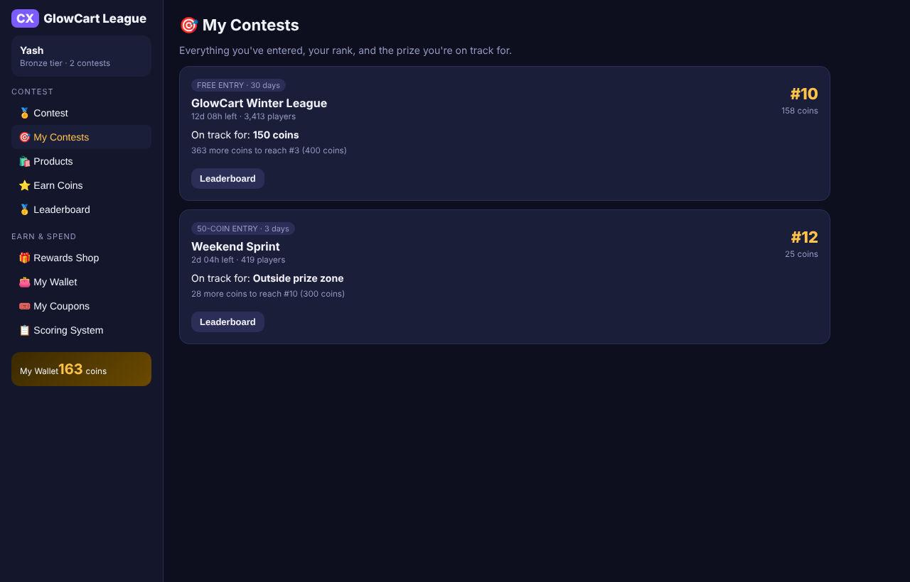
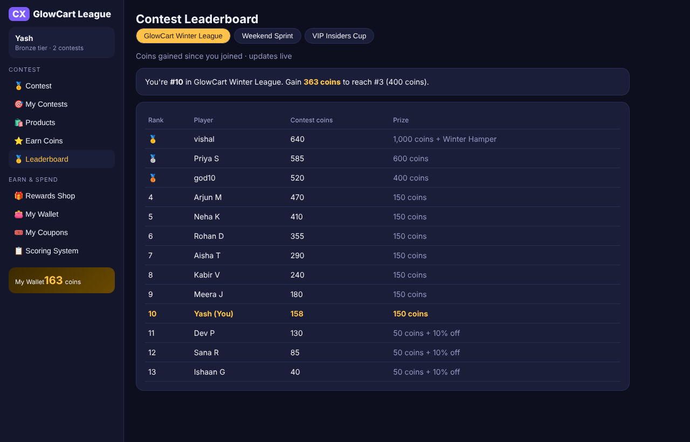
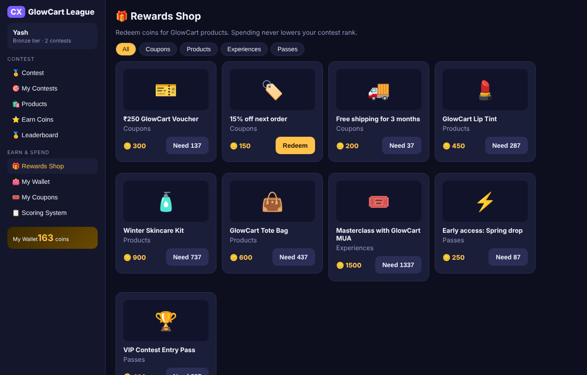
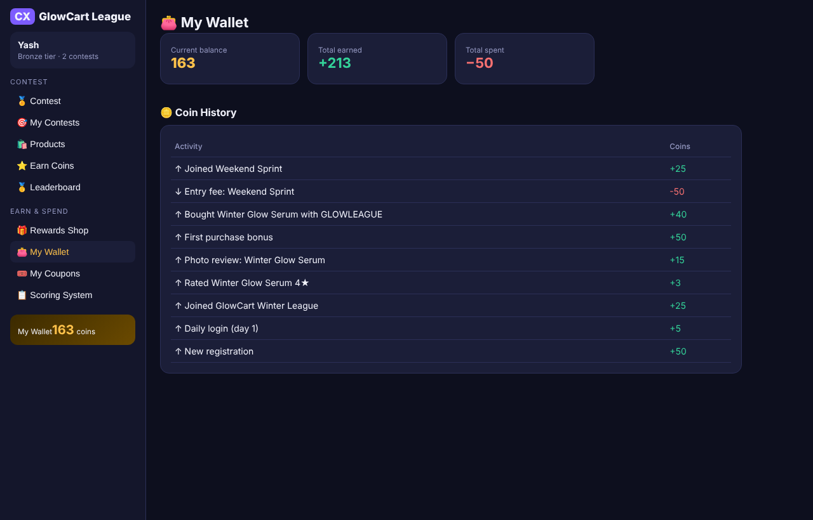
| Build 2 Nov 14–15 |
What works: a local app (Node server + Claude API) with an AI-written quiz in each contest: 5 questions per play, up to 5 plays, no repeated questions, answers checked on the server, points added to that contest's leaderboard. Points are now per contest and coins are the wallet (prizes and Rewards Shop). Players can join up to 5 contests; the Rewards Shop Earn tab credits every joined contest that scores an action. The contest page has Prizes, Leaderboard, Scoring and How to Play tabs; general leaderboards; a brand admin sketch (analytics, launch/edit contests, quiz settings, shop items, AI cost). PostHog runs on the Product Page, prototype and app with session replay and custom quiz events. AGENTS.md documents structure and run steps; BACKLOG.md tracks what's pending. What I learned: structured outputs make the AI reply dependable: the server always gets question, options, answer and explanation as JSON, so the quiz never breaks on a badly formatted reply. Keeping the answer key on the server matters as soon as a leaderboard has prizes. Giving the model only the brand catalog keeps brand questions factual, and starting with the cheapest model (Haiku 5.5) with the model name in What broke / changed: I first planned an AI review checker, then switched to the brand quiz because it tests engagement, the risk brands care about. The quiz went through three versions: general knowledge only (felt unrelated to the brand), then brand-only (a brand profile with founding, founders, best-seller, upcoming collections and offers), then the final mix of 3 brand + 1 industry + 1 general, which keeps the brand focus but stays fun. The server enforces the mix, and each question is labelled. Mid-build the points model changed: points per contest, coins only as prizes, which meant moving data to a small server so the admin and player pages share it. The prototype file came read-only from the zip; Python's local server couldn't read the Desktop folder (switched to Node); session replay looked off on localhost because the browser cached PostHog's settings for 5 minutes. Costs: Claude API for quiz generation: about $0.03 for about 20 test quizzes (Claude Haiku 5.5; $0.0018 per mixed quiz, 13.4 s average). Agent usage covered by my Claude Pro subscription ($20/month). PostHog free tier; GitHub Pages free. Hours: about 8 hours (Nov 14–15), including planning, building the app and AI quiz, testing and PostHog setup. Total so far: about 14 hours. |
| Build 1 Nov 7–8 |
What works: contest lobby with three entry types (free, coin entry, VIP pass unlocked by tier or a shop pass); per-product dropdown actions (review with a 30-word check, photo, star rating, referral link, buy with coupon); coins credit to the wallet and every joined contest; My Contests with "coins to next tier"; per-contest leaderboard with rank-wise prizes; rewarded-ad flow with a 5/day cap; reward shop issuing CRX- coupons; wallet history. What I learned: the agent builds fastest from a concrete reference. Pointing it at the live Credexon 2.0 lobby gave the real scoring values and contest model in one pass, where describing it in words took three rounds. Defining one core workflow first made it obvious which screens are supporting rather than core. What broke / changed: the first draft invented a separate points currency, which was wrong because Credexon uses one coin balance with contest score = coins earned in the window. Reviews and purchases moved from a generic task list into a dropdown on each product. Opening one product card stretched its neighbours (fixed). Added multiple contests and a My Contests page. Costs: $0 in API or hosting (static HTML, runs locally; GitHub Pages is free). Agent usage is covered by my Claude subscription: Claude Pro, $20/month. Hours: about 6 hours, including conceptualisation and setup. |